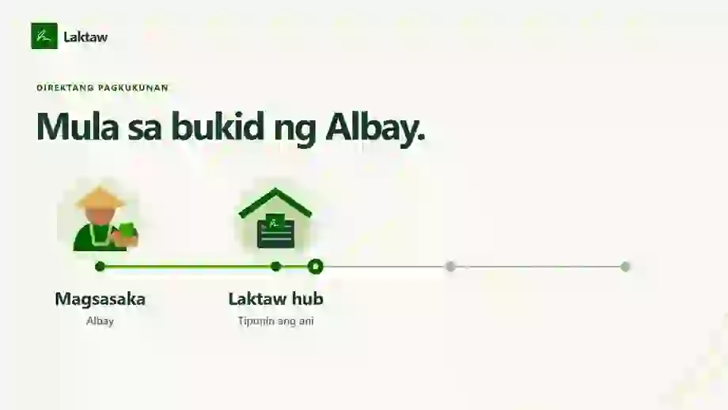

ALBAY, PHILIPPINES
From local
farms to your
doorstep.
Shop fresh fruits and vegetables from Albay farmers, check prices on your phone, and have your groceries delivered home.
Watch on YouTubeTry a sample order ↓
 LAKTAW MOBILE / STORE PREVIEW
LAKTAW MOBILE / STORE PREVIEWYour market trip, simplified.
Walk through a sample order, from choosing your vegetables to receiving the delivery. All prices and stops below are illustrative.
Try a shopping scenario
- Use the quantity buttons to build your basket.
- Check the total, then confirm your sample order.
- Follow the truck to see where the produce goes.
Your practice basket
Produce total
From farm to front door
Trace a sample delivery across three stops.
FarmPacking hubHome
Meet Laktaw.
Sariwang ani, mula sa bukid, diretso sa inyong tahanan.

▶ Watch on YouTube